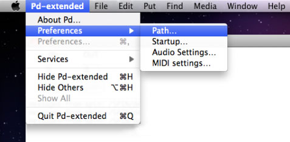
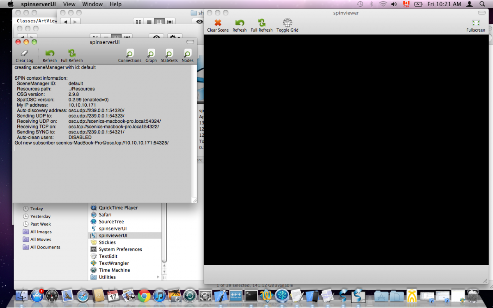
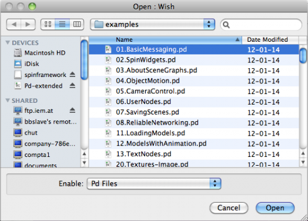

This guide will show you how to get started using SPIN with Pure Data and the example patches from [pdsheefa]. You can use any other software that can send OSC messages, but then you won't have any examples to start with.
STEP 1: Get SPIN
Start by downloading the latest version of the SPIN Framework package and drag the "Spin Viewer" and "Spin Server" .apps to your Applications folder:
http://spinframework.org/downloads
STEP 2: Get Pd-Extended
Do the same for Pure Data Extended. Download the latest version and drag it to your Applications folder:
http://puredata.info/downloads/pd-extended
STEP 3: Get [pdsheefa]
Download pdsheefa:
http://code.sat.qc.ca/downloads/pdsheefa/osx
Unpack this package to some other place on your hard drive, for example:
~/Library/Pd/pdsheefa
(This folder can be placed in any other location you like, however)
STEP 4: Tell Pd where to find [pdsheefa]
Open Pd-extended. From the dropdown menu at the top of the screen, select Pd-extended > Preferences > Path (pictured below).

A window will open which displays all of the locations that Pure Data looks to find the information it needs when it loads up. Add the path where you unpacked the pdsheefa library.
(Optional dependencies): Get dependencies
For advanced features (like video textures), SPIN requires 3rd party libraries. You can skip this step for now.
GStreamer:
Follow the instructions here: http://docs.gstreamer.com/display/GstSDK/Installing+on+Mac+OS+X
FFMPEG:
- Download XCode from the Mac App Store.
- Launch XCode, open the Preferences, select the Downloads tab and install "Command Line Tools".
- Download and install the latest version of Macports.
- Open the Terminal.app and install the desired ports:
sudo port install ffmpeg
STEP 5: Test the spinserver and spinviewer
Now, open up the two main SPIN framework applications: One is a server application called "Spin Server", and the other is a graphical window called "Spin Viewer". You will find these in your Applications folder.
They should look something like this:

It is important here to verify that the server and viewer are communicating with each other. Look at the log messages in the server's window and you should see a message that begins "Got new subscriber" and is followed with the name of your machine and its IP address.
Another test is to try to toggle the grid in the Spin Viewer (button in toolbar), which should enable the debug grid as seen below:

STEP 6: Try the examples
From within Pure Data (Pd-Extended), select File > Open from the dropdown menu at the top of the screen and search for the "examples" folder in pdsheefa. You should see a bunch of examples, roughly ordered in complexity. Open the first one and begin learning SPIN!
